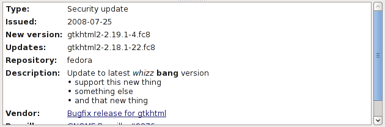
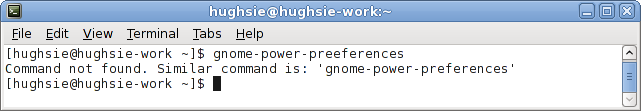

Frequently Asked Questions
|
Frequently Asked Questions |
|
Back to the main page
Backends do not have to be complete when they are added to PackageKit. If a feature is not present then it is hidden in the UI, which will explain why on some distributions the client tools look a little different to other distributions. You can see the latest feature matrix here.
In the software source viewer you can enable and disable repositories, but you cannot rename, add or remove them. This is a deliberate design choice chosen for the following reasons:
repo-release.rpm package which also adds the GPG keysrepo-release.rpm removes the repo and any temporary filesYes, as long as the descripions are formatted with Markdown then the descriptions will be formatted correctly in client programs. Using Markdown is a deliberate choice as it does not force the vendor to adopt any specific markup language. An example Markdown package description would be:
GNOME Power Manager uses the information and facilities provided by HAL displaying icons and handling user callbacks in an **interactive** GNOME session. The following *GUI* programs are provided: * `gnome-power-preferences` - set policy and change preferences * `gnome-power-statistics` - view power graphs and device history
This would be rendered by a text program as:
GNOME Power Manager uses the information and facilities provided by HAL displaying icons and handling user callbacks in an interactive GNOME session. The following GUI programs are provided: * gnome-power-preferences - set policy and change preferences * gnome-power-statistics - view power graphs and device history
A GUI front-end would format the text like this:
|
GNOME Power Manager uses the information and facilities provided by HAL displaying icons and handling user callbacks in an interactive GNOME session. The following GUI programs are provided:
|
Update descriptions are also processed for markdown, for example:
The command not found functionality is a bash extension that allows PackageKit to suggest similar commands, or to offer to install packages to provide commands. It's probably best to click on the image and watch the video.
No, as they are a potential security problem. The issues are as follows:
So what's the solution? Using a standard $vendor-release.rpm or .deb
you can ship the standard repo or source with a signed GPG key.
PackageKit also supports catalogs which can install sets of files provided by
your distro.
Quoting Sebastian Heinlein, Allowing to easily add third party repositories and install third party software without a certification infrastructure is like opening the gates to hell. Most user just don't have got the technical understanding to handle this well.
PackageKit runs a process packagekitd that is a daemon that runs per-system.
The daemon lets you schedule transactions using either the raw
DBUS methods, or using libpackagekit.
The transactions are very fine grained, so an application would have to manage
the transaction process itself.
This would mean handling the EULA and GPG callbacks in each application. This is less than ideal.
For this reason, a session helper is provided which makes all the complexity go away; it handles all the GPG key authentication and EULA agreements, and also works with authentication agent and user settings. Using the session service is also designed to be synchronous, which means you can send the DBUS call and just wait for the result, rather than managing callbacks to update custom GUIs.
The session helper is implemented in gpk-update-icon on GNOME,
and is also availble when apper is installed on KDE.
If you want full integration using
custom dialogs without running the extra session process, then use libpackagekit.
If you don't care, and just want things to work then
use the session interface.
If you want a demo, you can download session.c for a
session example and system.c as a system example.
Compile with:
gcc -o session -Wall session.c `pkg-config --cflags --libs gio-2.0` gcc -o system -Wall system.c `pkg-config --cflags --libs packagekit-glib`
Using the shared session interface you can use the following DBUS methods to make PackageKit just do the right thing. All the additional confirmation, package downloads, GPG and EULA prompting is done automatically.
The DBUS methods are designed to be run syncronously, but can be run
async using g_dbus_proxy_call and getting the status with
g_dbus_proxy_call_finish.
There is example code available in c or
in python.
The methods available on this interface are:
InstallPackageName("openoffice-clipart")InstallProvideFile("/usr/share/fonts/sarai/Sarai_07.ttf")InstallLocalFile("/home/dave/Desktop/lirc-0.6.6-4.rhfc1.dag.i686.rpm")InstallMimeType("application/x-rpm")InstallFont("lang(en_GB)")Please email me or the mailing list if you have any other questions
The Rawhide repository does not supply metadata needed for the update-viewer to display extra information about the update, such as changelogs, CVE and bugzilla references. Only released versions of Fedora have this metadata.
You don't have to have a backend that supports percentage updates. If you don't know the progress, just emit NoPercentageUpdates and then the UI should just do the right thing and spin backwards and forwards.
The remaining time to completion of the transaction is calculated using an average time of the time between percentage updates points, extrapolated to 100%. This means that backends that give accurate and frequent percentage-changed signals will get accurate times.
If a backend updates the percentage using very course updates (e.g. 20%, 40%, 60%, 80%, 100%) then the remaining time algorithm will not perform well. Similarly, if the duration of 0% to 50% takes 2 minutes and 50% to 100% takes 10 minutes then at first the time will be reported under the true time to completion. It is up to the backends to map the transaction progress to fine-granularity accurate percentage updates, at least as best as possible.
Backends don't have to support all options of all methods. Just set an error and return false if not implemented.
Error codes have to be standardized so they can be localized. The error detail field can just be the untranslatable output. If you are creating a backend and you need another error enum, mention it and we can add it to the supported list.
Upgrading, installing or removing packages has to be 100% silent.
The user cannot be prompted mid-transaction for questions as these will not be handled in PackageKit. The backend should do the right thing, as these questions mean very little to the average user.
The reasons for this are as follows:
EULAs or other agreements will have to be agreed to before the
transaction is processed using the EulaRequired signal.
EULAs should preferably be shown per-user - i.e. the first time an application is run.
PackageKit will not install packages with broken maintainer scripts that
require a stdin.
Debian
policy clearly says that prompting on stdin instead of using debconf is deprecated.
If this is attempted the backend should detect this and error out of the
transaction with PK_ERROR_ENUM_BROKEN_PACKAGE.
We cannot and will not ask the user for random standard input.
See the Debian PackageKit wiki for more details and further discussion.
If the transaction needs to tell the user something, the Message()
method can be used that will localise the message up the stack, and also give the user a way
of ignoring duplicate messages of this type. We really don't want to be doing things like
this
or this.
PackageKit does not replace up2date. PackageKit is a way for users to interact with the packaging system, not for an administrator to install software on remote machines.
PackageKit is not yet another system daemon. It quits when not doing anything, and only starts when something wants information or a task completed.
PackageKit does not do dependency resolution. This problem has already been solved by the backend systems and we don't really want to re-invent the wheel.
PackageKit does not have the fine-grained API to do everything. For instance, synaptic should still use libapt as can do much more than can be provided by PackageKit.
PackageKit is designed from the ground up to work with fast user switching and logging in and out of sessions during upgrades. You can start a package install, log out, log in as another user, all without corruption.
PackageKit does not stop you using the low level tools, in fact it quits as soon as possible if a native tool is waiting to be run.
PackageKit is not sponsored by anyone, although I now work at Red Hat full time on PackageKit and several other projects.
Back to the main page
{kind=link}